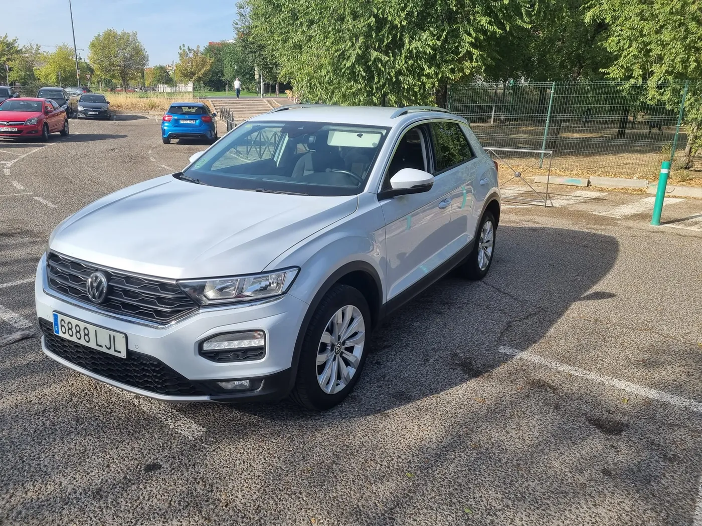
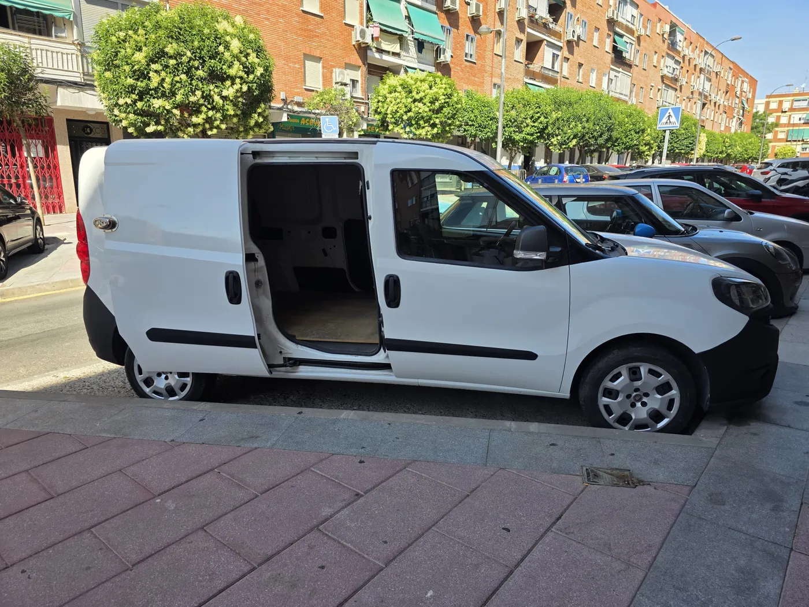
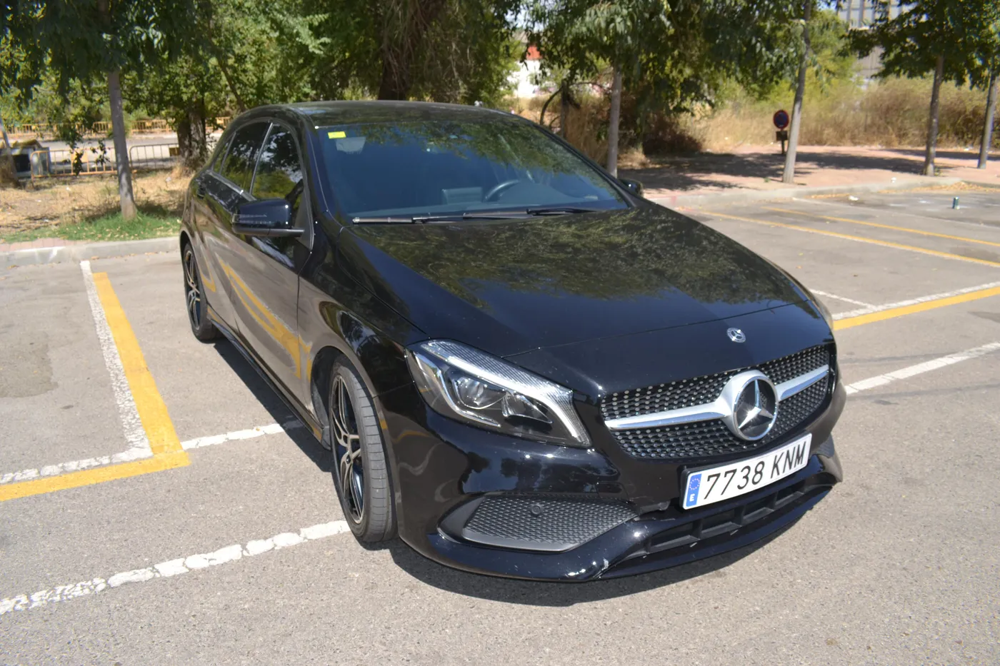
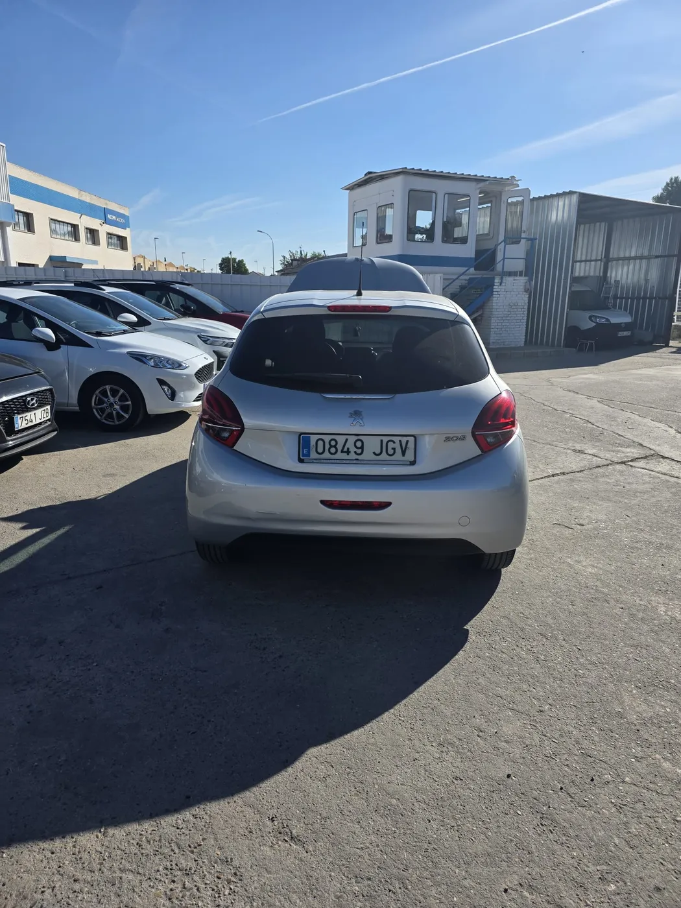
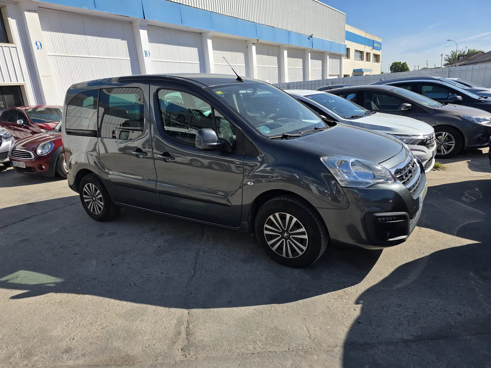

‹›Financiación disponible12.950€
Volkswagen T-Roc Advance
1.6 TDI 115 CV
SUV diésel amplio, cómodo y con buen equilibrio entre consumo, presencia y uso diario.
2020237.231 kmDiéselManual

Este Fiat Dobló ECO se entrega con revisión de estado, limpieza y comprobación documental para que puedas comprar con más seguridad.
Furgoneta práctica y eficiente con etiqueta ECO, ideal para trabajo, reparto urbano o uso profesional con bajo coste de uso.
Fiat Dobló ECO de segunda mano en Madrid, con motor 1.4 T-Jet de 120 CV y sistema gasolina + GNC. Es una unidad pensada para quien necesita espacio de carga, etiqueta ECO y un vehículo funcional para el día a día profesional.
Publicado: 01/05/26. Última modificación de ficha: 12/06/26.
Otros modelos disponibles en Coches G23.

‹›1.6 TDI 115 CV
SUV diésel amplio, cómodo y con buen equilibrio entre consumo, presencia y uso diario.

‹›7G-DCT 136 CV
Compacto premium diésel con cambio automático, diseño deportivo y buena calidad interior.

‹›1.2 PureTech S&S Active 82 CV
Utilitario gasolina cómodo y económico, perfecto para ciudad y desplazamientos diarios.

‹›1.2 PureTech Active 110 CV
Vehículo familiar y práctico, con 5 plazas, mucho espacio interior y motor gasolina 110 CV.
Sí, cada vehículo incluye revisión de estado y comprobación documental antes de la entrega.
Sí. Puedes consultar una cuota orientativa según entrada, plazo y vehículo elegido.
Los vehículos se anuncian con garantía de 12 meses según condiciones de contrato y normativa aplicable.
Sí. Contacta por WhatsApp o teléfono y te informamos de disponibilidad, estado y próximos pasos.